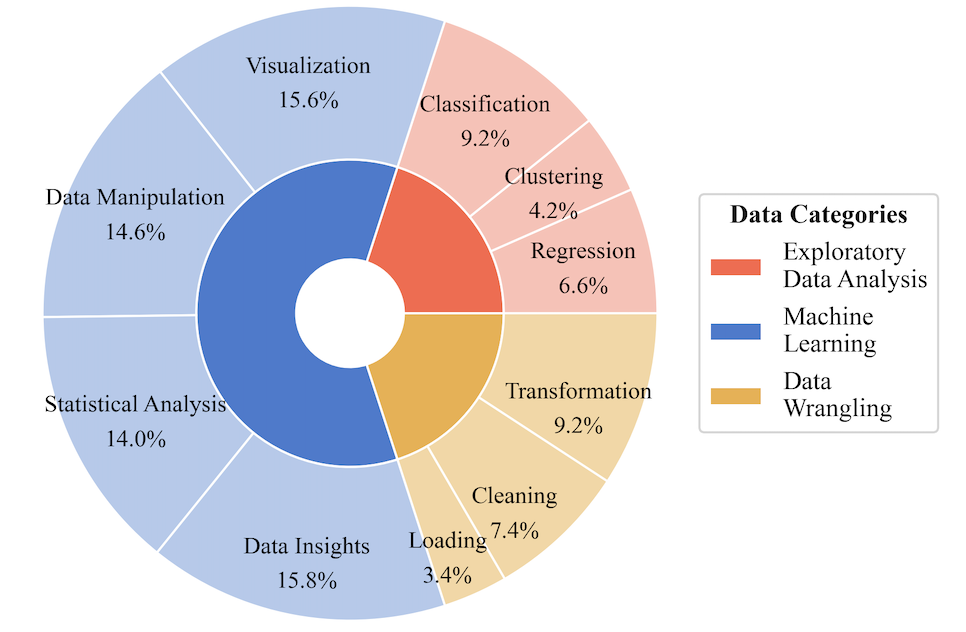
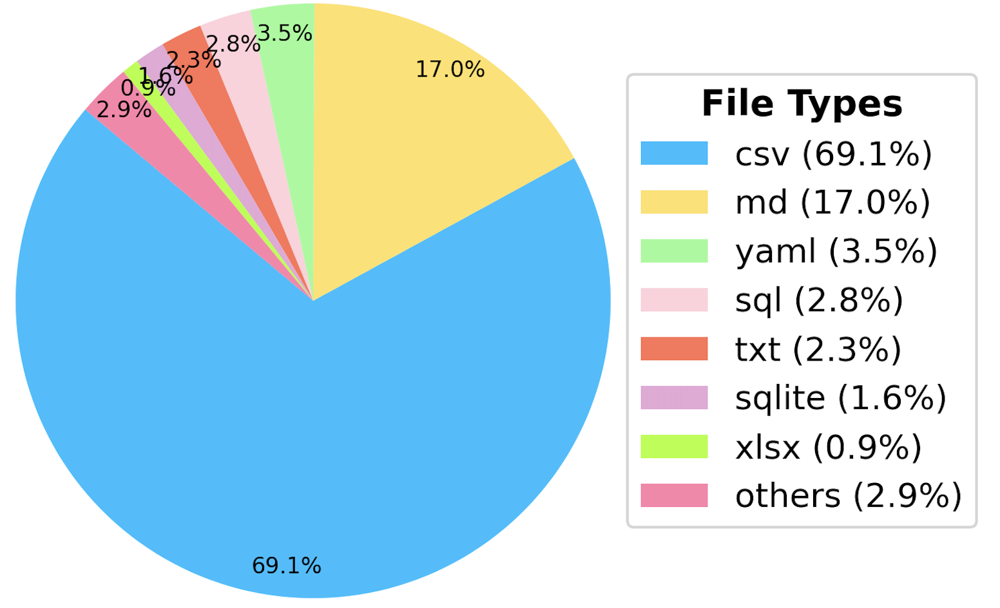

Paper
Paper
 Dataset
Dataset
Data Statistics of Examples in DA-Code
DA-Code Task Types Proportion
DA-Code File Types Proportion
| Rank | Model | DW | ML | EDA | Easy | Medium | Hard | Total | Completion Rate (\%) | Avg Steps | Executable Code (\%) |
|---|---|---|---|---|---|---|---|---|---|---|---|
| 1 | GPT-4 | 30.4 | 48.4 | 24.6 | 45.4 | 27.8 | 23.4 | 30.5 | 99.4 | 7.3 | 76.8 |
| 2 | GPT-4o | 33.3 | 48.0 | 21.3 | 46.2 | 25.6 | 21.7 | 29.1 | 97.4 | 6.8 | 77.7 |
| 3 | Claude-3-Opus | 29.3 | 46.8 | 20.7 | 44.7 | 23.8 | 19.0 | 27.6 | 97.7 | 8.9 | 75.7 |
| 4 | Qwen2.5-72B | 24.9 | 41.8 | 15.4 | 31.9 | 19.4 | 22.3 | 22.6 | 93.8 | 8.6 | 72.2 |
| 5 | Deepseek-Coder-V2.5 | 25.1 | 34.1 | 14.7 | 32.8 | 18.7 | 14.1 | 20.7 | 89.8 | 7.1 | 59.0 |
| 6 | Mixtral-8x22B | 14.8 | 31.6 | 10.2 | 17.6 | 16.8 | 8.6 | 15.4 | 67.2 | 11.1 | 55.1 |
| 7 | Deepseek-Coder-33B | 9.1 | 22.1 | 7.6 | 12.4 | 11.3 | 7.9 | 10.8 | 31.9 | 11.6 | 49.7 |